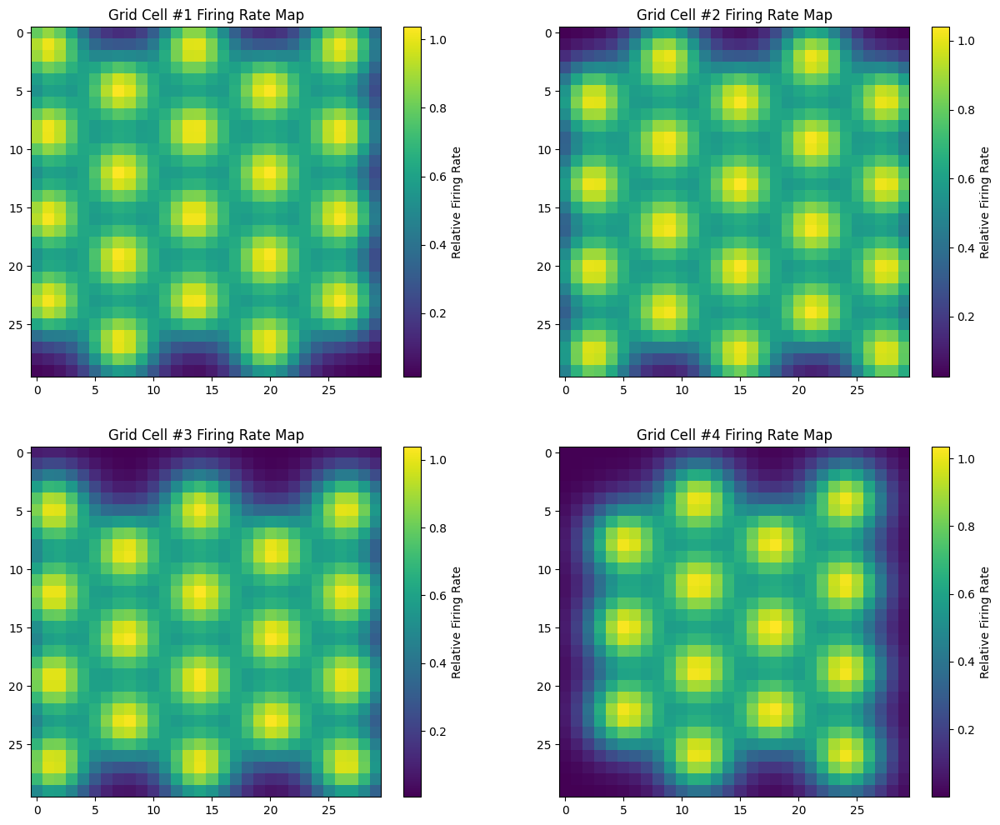

Notebook source code: notebooks/other/29_grid_cells_var_orientation.ipynb
Original code by Will Redman https://wredman4.wixsite.com/wtredman, adapted to python by Francisco Acosta
Set Up#
In [2]:
import os
import subprocess
gitroot_path = subprocess.check_output(
["git", "rev-parse", "--show-toplevel"], universal_newlines=True
)
os.chdir(os.path.join(gitroot_path[:-1], "neurometry"))
print("Working directory: ", os.getcwd())
import warnings
warnings.filterwarnings("ignore")
import sys
sys_dir = os.path.dirname(os.getcwd())
sys.path.append(sys_dir)
print("Directory added to path: ", sys_dir)
sys.path.append(os.getcwd())
print("Directory added to path: ", os.getcwd())
%load_ext autoreload
%autoreload 2
Working directory: /home/nmiolane/code/neurometry/neurometry
Directory added to path: /home/nmiolane/code/neurometry
Directory added to path: /home/nmiolane/code/neurometry/neurometry
Imports#
In [3]:
import matplotlib.pyplot as plt
import numpy as np
from viz import plot_grid_rate_maps, plot_grids
import neurometry.datasets.gridcells as gridcells
Generate Synthetic Grid Cell Data#
Synthetic neural data can be readily generated by specifying the parameters below and calling the function gridcells.load_grid_cells_synthetic
Here we break it up into 3 steps, (1) Generate grids (2) Generate rate maps (3) general neural activity
Initialize parameters#
In [6]:
grid_scale = 1
arena_dims = np.array([4, 4])
n_cells = 4
grid_orientation_mean = 0
grid_orientation_std = 0
field_width = 0.1
resolution = 30
"""
neural_activity, labels = gridcells.load_grid_cells_synthetic(
grid_scale,
arena_dims,
n_cells,
grid_orientation_mean,
grid_orientation_std,
field_width,
resolution,
)
"""
Out [6]:
'\nneural_activity, labels = gridcells.load_grid_cells_synthetic(\n grid_scale,\n arena_dims,\n n_cells,\n grid_orientation_mean,\n grid_orientation_std,\n field_width,\n resolution,\n)\n'
Generate grids#
In [7]:
grids = gridcells.generate_all_grids(
grid_scale, arena_dims, n_cells, grid_orientation_mean, grid_orientation_std
)
plot_grids(grids, arena_dims)

Generate rate maps#
In [8]:
rate_maps = gridcells.create_rate_maps(grids, field_width, arena_dims, resolution)
plot_grid_rate_maps(rate_maps)

Generate neural activity#
In [42]:
neural_activity = gridcells.get_neural_activity(rate_maps)
print(neural_activity.shape)
(2500, 8)
Functions#
These are all the functions implemented in neurometry.datasets.gridcells
In [2]:
def create_reference_lattice(lx, ly, arena_dims):
"""Create hexagonal reference periodic lattice.
Parameters
----------
lx : float
Horizonatal distance between grid cell fields
ly : float
Vertical distance between grid cell fields
arena_dims : numpy.ndarray, shape=(2,)
Dimensions of rectangular arena, [length, height]
Returns
-------
ref_lattice : numpy.ndarray, shape=((ceil(dims[0]/lx)+1)*(ceil(dims[1]/ly)+1),2)
Reference periodic lattice, specified by listing the x-y coordinates of each field
"""
n_x = np.arange(-(arena_dims[0] / lx) // 2, (arena_dims[0] / lx) // 2 + 1)
n_y = np.arange(-(arena_dims[1] / ly) // 2, (arena_dims[1] / ly) // 2 + 1)
N_x, N_y = np.meshgrid(n_x, n_y)
offset_x = np.tile([[0], [0.5]], np.shape(N_x))[: np.shape(N_x)[0], :]
X = lx * (N_x + offset_x)
Y = ly * N_y
return np.hstack((np.reshape(X, (-1, 1)), np.reshape(Y, (-1, 1))))
In [3]:
def generate_all_grids(
grid_scale, arena_dims, n_cells, grid_orientation_mean, grid_orientation_std
):
r"""Create lattices for all grid cells within a module, with varying phase & orientation.
Parameters
----------
grid_scale : float
Spacing between fields (lattice constant)
dims : numpy.ndarray, shape=(2,)
Dimensions of rectangular arena, [length, height]
n_cells : int
Number of grid cells in module
grid_orientation_mean : float \in [0,360)
Mean orientation angle of grid cell lattices, in degrees
grid_orientation_std : float
Standard deviation of orientation distribution (modeled as Gaussian), in degrees
Returns
-------
grids : numpy.ndarray, shape=(num_cells, num_fields_per_cell = (ceil(dims[0]/lx)+1)*(ceil(dims[1]/ly)+1),2)
All the grid cell lattices.
"""
lx = grid_scale
ly = grid_scale * np.sqrt(3) / 2
ref_lattice = create_reference_lattice(lx, ly, arena_dims)
grids = np.zeros((n_cells, *np.shape(ref_lattice)))
for i in range(n_cells):
angle_i = np.random.normal(grid_orientation_mean, grid_orientation_std) * (
np.pi / 180
)
rot_i = np.array(
[[np.cos(angle_i), -np.sin(angle_i)], [np.sin(angle_i), np.cos(angle_i)]]
)
phase_i = np.multiply([lx, ly], np.random.rand(2))
lattice_i = np.matmul(rot_i, ref_lattice.T).T + phase_i
lattice_i = np.where(abs(lattice_i) < arena_dims / 2, lattice_i, None)
grids[i, :, :] = lattice_i
return grids
In [4]:
def viz(grids, arena_dims):
"""Visualize the the firing lattices for all grid cells."""
plt.get_cmap("hsv")
fig = plt.figure(figsize=(8, 8))
ax = fig.add_subplot(111)
ax.set_aspect("equal")
ax.set_facecolor("darkblue")
ax.set_xlim(-arena_dims[0] / 2 - 0.5, arena_dims[0] / 2 + 0.5)
ax.set_ylim(-arena_dims[1] / 2 - 0.5, arena_dims[1] / 2 + 0.5)
ax.set_title("Hexagonal grids")
ax.set_xlabel("x-position")
ax.set_ylabel("y-position")
for lattice in grids:
plt.scatter(lattice[:, 0], lattice[:, 1])
In [5]:
def create_rate_maps(grids, field_width, arena_dims, resolution):
"""Create 2D firing rate maps for all grid cells.
Parameters
----------
grids : numpy.ndarray, shape=(num_cells, num_fields_per_cell = (ceil(dims[0]/lx)+1)*(ceil(dims[1]/ly)+1),2)
All the grid cell lattices.
field_width : float
width of firing field, expressed as variance of Gaussian
arena_dims : numpy.ndarray, shape=(2,)
Dimensions of rectangular arena, [length, height]
resolution : int
Spatial resolution of computed rate map
Returns
-------
rate_maps : numpy.ndarray, shape=(num_cells, d,d)
Discretized 2D firing field lattice for all grid cells
"""
X = np.linspace(-arena_dims[0] / 2, arena_dims[0] / 2, resolution)
Y = np.linspace(-arena_dims[1] / 2, arena_dims[1] / 2, resolution)
rate_maps = np.zeros((len(grids), len(X), len(Y)))
for cell_index in range(len(grids)):
for x in range(len(X)):
for y in range(len(Y)):
for vertex in range(grids.shape[1]):
if not np.isnan(grids[cell_index, vertex]).any():
rate_maps[cell_index, x, y] += np.exp(
-(
(grids[cell_index, vertex, 0] - X[x]) ** 2
+ (grids[cell_index, vertex, 1] - Y[y]) ** 2
)
/ (2 * field_width)
)
return rate_maps
In [34]:
def zig_zag_flatten(matrix):
num_rows, num_columns = matrix.shape
flattened = np.zeros(num_rows * num_columns)
for row_index in range(num_rows):
if row_index % 2 == 0:
flattened[row_index * num_columns : (row_index + 1) * num_columns] = matrix[
row_index
]
else:
flattened[row_index * num_columns : (row_index + 1) * num_columns] = matrix[
row_index, ::-1
]
return flattened
In [40]:
def get_neural_activity(rate_maps):
num_points = rate_maps.shape[1] * rate_maps.shape[2]
num_cells = rate_maps.shape[0]
neural_activity = np.zeros((num_points, num_cells))
for cell_index in range(num_cells):
neural_activity[:, cell_index] = zig_zag_flatten(rate_maps[cell_index])
return neural_activity